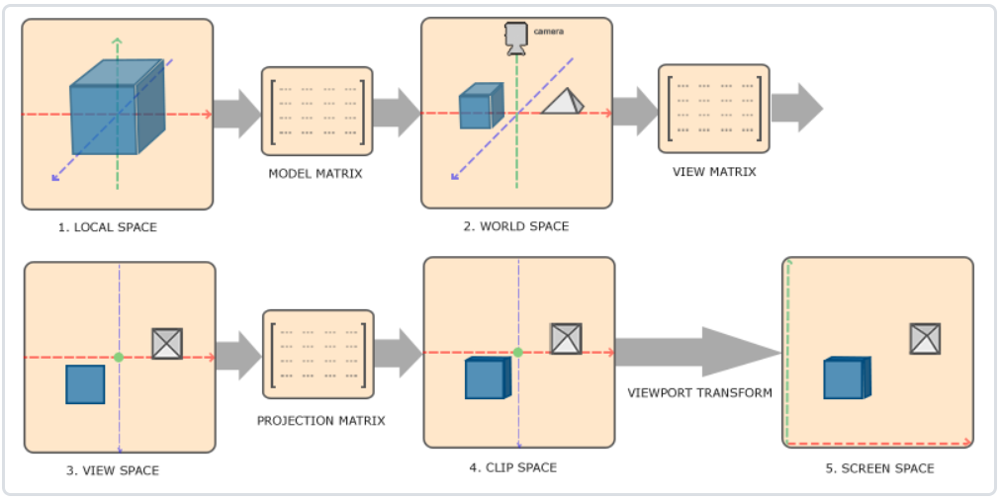
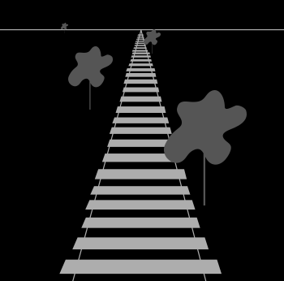
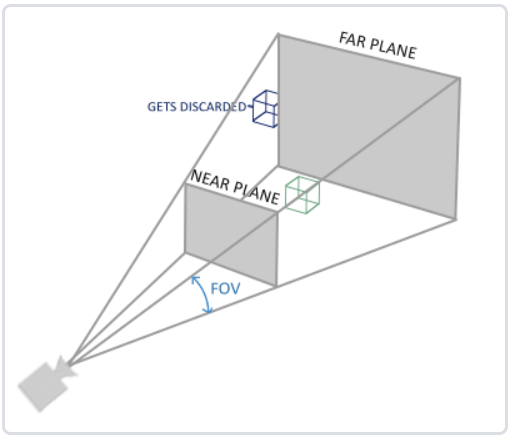
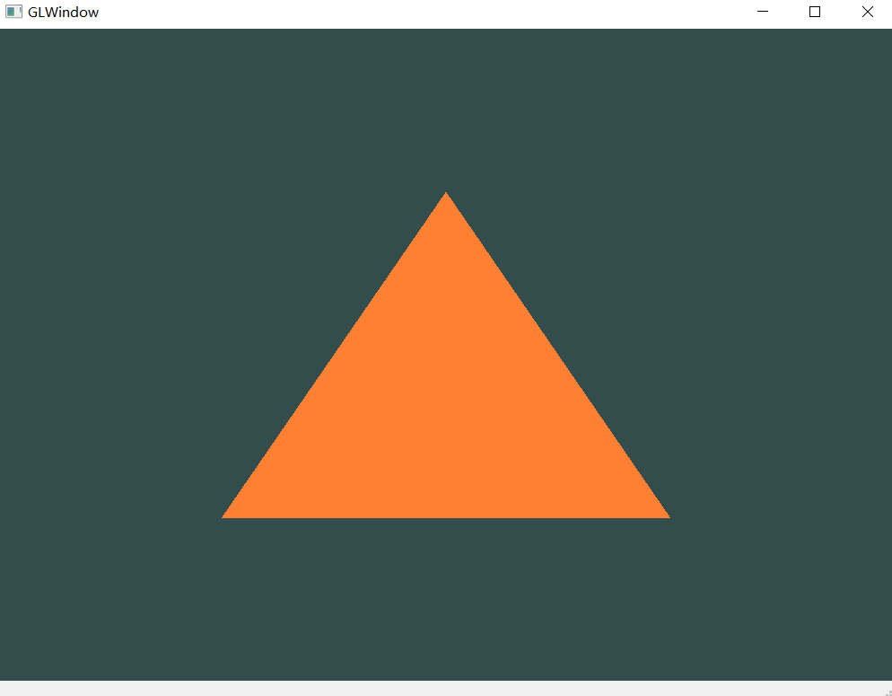

5.坐标系统
在顶点着色器运行后，点需要转换为标准化设备坐标(Normalized Device Coordinate, NDC)，然后绘制在x,y,z都为[-1,1]之间的范围内，此范围外的顶点都不可见。在此之后，会传入光栅器，变为屏幕上的二维坐标或像素。
我们关心如下几个坐标系：
- 局部空间(
Local Space，或者称为物体空间(Object Space)) - 世界空间(
World Space) - 观察空间(
View Space，或者称为视觉空间(Eye Space)) - 裁剪空间(
Clip Space) - 屏幕空间(
Screen Space)
5.1.坐标转换
可以使用变换矩阵表示不同坐标系间的转换，最重要的是模型(Model)、观察(View)、投影(Projection)三个矩阵，顶点会经历局部空间(Local Space)，世界坐标(World Coordinate)，观察坐标(View Coordinate)，裁剪坐标(Clip Coordinate)，并最后以屏幕坐标(Screen Coordinate)的形式结束。

- 局部坐标是对象相对于局部原点的坐标，也是物体起始的坐标。
- 下一步是将局部坐标变换为世界空间坐标，世界空间坐标是处于一个更大的空间范围的。这些坐标相对于世界的全局原点，它们会和其它物体一起相对于世界的原点进行摆放。
- 接下来我们将世界坐标变换为观察空间坐标，使得每个坐标都是从摄像机或者说观察者的角度进行观察的。
- 坐标到达观察空间之后，我们需要将其投影到裁剪坐标。裁剪坐标会被处理至-1.0到1.0的范围内，并判断哪些顶点将会出现在屏幕上。
- 最后，我们将裁剪坐标变换为屏幕坐标，我们将使用一个叫做视口变换(
Viewport Transform)的过程。视口变换将位于-1.0到1.0范围的坐标变换到由glViewport函数所定义的坐标范围内。最后变换出来的坐标将会送到光栅器，将其转化为片段。
上述第4步通常会使用投影矩阵将观察空间中的顶点坐标转换到-1.0到1.0范围内（即裁剪坐标），该投影矩阵可以有两种不同形式，即正射投影矩阵(Orthographic Projection Matrix)或一个透视投影矩阵(Perspective Projection Matrix)，每种形式都定义了不同的平截头体。
在本课程中我们使用透视投影矩阵，更接近于真实世界中的效果。


QMatrix4x4 projection;
projection.perspective((m_camera.Zoom), (float)m_camera.SCR_WIDTH / (float)m_camera.SCR_HEIGHT, 0.1f, 100.0f);
- 参数1：FOV(Field of View)；
- 参数2：宽高比；
- 参数3：近平面距离；
- 参数4：远平面距离；
在顶点着色器中将会执行下面的过程，得到裁剪坐标并将结果赋值到gl_Position
注意：
- 之后OpenGL会对裁剪坐标执行透视除法，转换为
标准化设备坐标； - 在转换为
标准化设备坐标之后，OpenGL会使用glViewPort内部的参数来将标准化设备坐标映射到屏幕坐标，即视口变换，试想一下，[-1,-1,-1]到[1,1,1]空间中的点被映射到了800x600屏幕上显示，很有趣吧？
5.2.适配我们的程序
在上节课程中，我们通过标准化设备坐标范围内的3个顶点绘制了三角形，在顶点着色器中没有进行任何坐标转换，之后成功绘制出来。
在实际项目中顶点坐标是各式各样的，需要在顶点着色器中进行坐标转换，转换为裁剪坐标，我们需要对此前项目进行适配，
- 引入坐标变换矩阵modelMat、viewMat和projectionMat，均为单位矩阵；
- 修改顶点着色器，将顶点转换为裁剪坐标；
#version 450 core
layout (location = 0) in vec3 aPos;
layout (location = 1) in vec3 aNormal;
uniform mat4 model;
uniform mat4 view;
uniform mat4 projection;
void main()
{
gl_Position = projection * view * model * vec4(aPos, 1.0);
}
这样，在模拟场景中我们从固定位置观察三角形，并将效果展示在屏幕上，如果没有错误的话，你将看到如下效果。

Attention
1）本节中我们使用了VS2022进行项目的打开、编译、调试和运行。
2）注意2个地方可能会出错，需要修改:(1)#include “glview.h”；(2)src的cmakelists文件中的"find_package(QT NAMES Qt6 Qt5 REQUIRED COMPONENTS Widgets)"需要去掉"QT5"，如果你没有安装"QT5"；
3）如果想打开调试控制台，方便（结合qDebug输出）调试，需要修改cmakelist中的WIN32_EXECUTABLE值为FALSE；
Attention
提示： #include <glview.h>可能会报错，这是编译器一般的处理机制，为了更高效的搜寻标准库和第三方库中的头文件，在本项目中glview.h是项目文件，用尖括号包含的话会以标准库和第三方库的方式是寻找，可能找不到，如果想避免这个错误，可以在cmakelists中添加如下代码指定头文件搜索路径：
target_include_directories(GLViewer PRIVATE .)